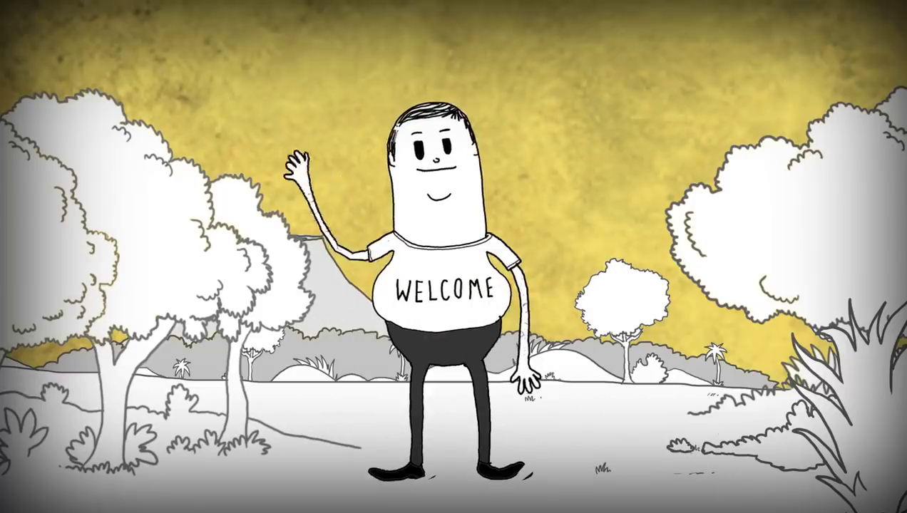

O vídeo Man analisado por um adulto
Man é um vídeo muito famoso na Internet.
Alguns professores usam este vídeo para mostrar uma visão destrutiva e egoísta da humanidade.
Mas essa é apenas uma opinião. Podemos assistir o vídeo "com outros olhos" e fazer uma crítica diferente. Podemos desenvolver um novo "ponto de vista".
Nas páginas seguintes vamos ver como um adulto pensa quando assiste o vídeo. A partir dessa visão diferente você poderá formar a sua própria opinião a respeito do vídeo.